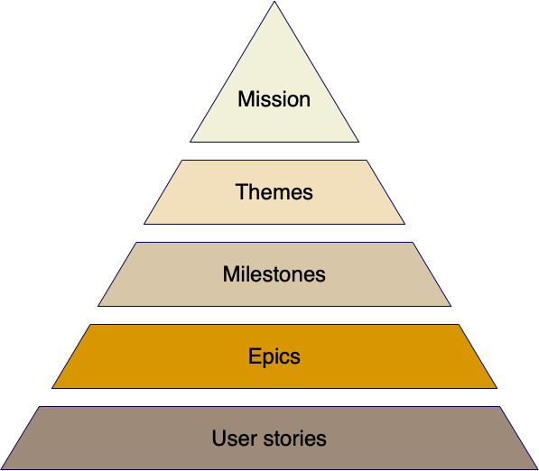
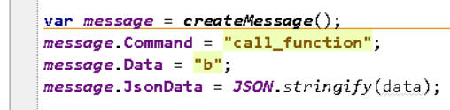
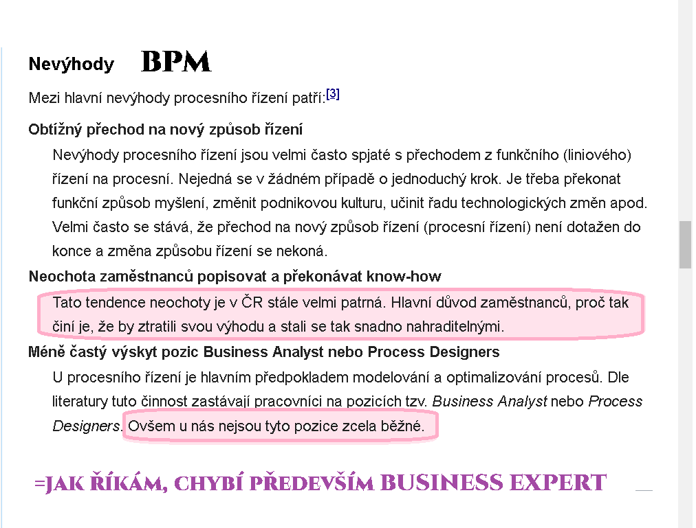
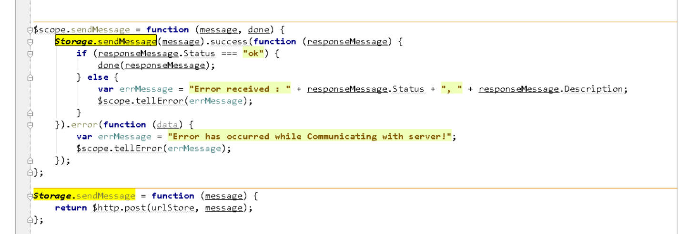

Je RestApi omyl?
Na adrese je tento obrázek:

Plusem této stránky je, že nedegenuruje project hned na low level implementaci, ale snaží se IT posunout nad věc samu - na stránce samotné je právě zmíněn Top-Down přístup k věci.
Bohužel project není suma tásků a už vůbec ne hierarchická. Často vidíme absenci popisu hlavního byznysu aplikace nebo projektu. Jenže co jiného je posláním projektu (pokud nejde o prostou monetizaci ;-) ) - to v gitech najít ani nemůžete, implementační překlad bude vždy ztrátový. Navíc explicitní popisy převede do popisů implicitních a ještě je učiní cryptic v řeči technologií. To, co jste mohli mít v jedné větě nebo souboru, máte po všech čertech. Už ani nevíte, kde to začíná a kde to končí a vlastně už ani nevíte co. Zbyde jen monetizační úsilí s vírou v konvergenci k něčemu s pomocí přidělování a odškrtávání tásků nahodilým jedincům. O nějaké misi, vizi, poslání, teamu, reusu a vůbec perspektivě těžko může být řeč. Na oko se hledají developeři, ve skutečnosti jsou potřeba dvě ruce ke klávesnici.
Nejjednodušším a asi jediným možným řešením projektu je rozdělení věcí na jednodušší. Od podstatného k detailům.
Kupříkladu mějme project popsán funkcí A(). A dejme tomu, že ji rozdělíme na a() a b(). Může se jednat o sekvenci volání funkcí. Můžeme to nakódovat natvrdo nebo to přenechat nadřazeném systému - což je podle mne lepší, je to cesta k BPM.
A dejme tomu že fukce a() využívá funkci b(). Pokud jsem v jednom procesu, snadná věc. Pokud funkce b() je v jiném procesu, tak snadné už to není. Proces je aktivní prvek a ty se musí dohodnout. Hovoříme o komunikaci mezi procesy. IT velice snadno a bohužel i rádo upadne do detailů těchto komunikací, ideální půda pro IT prokrastrinace. Takže máme celé přehlídky komunikací mezi procesy a těžko hovořit o kompatibilitě, spíš o vendor nebo technology lock. A je úplně jedno jak to nazvete - např. hodně oblíbenými pojmy jsou microservices a RestApi. Kolik popisů najdete na internetu. A co se dovíte?
A přitom stačí všechnu tu rádoby monetizační veteš zahodit a jen zauvažovat, vocogo.
Jde přece o to, že funkce a() pošle možná funkci b() nějaká data. Takže máme dvě věci: zavolání funkce b() a případné poslání nebo zpětné převzetí dat. S převzetím dat - ať už nastane nebo ne - úzce souvisí informace, že funkce b() proběhla, to jest, že se ukončila. Takže nezávisle na převzetí dat může funkce a() čekat na ukončení funkce b(). To jest, jestli volání je asynchronní nebo synchronní. A všimněte si, že volání BPM může být synchronní, ale underlying technology volání může být asynchronní. Lépe je říkat volání s blokováním a bez blokování volajícího procesu. Tomu budou rozumět všichni.
Problém IT je v tom, že jak formuluje business logic ve svých technologiích, jsou ty formulace zbytečně složité, nepřenosné, jiným programátorům těžko pochopitelné - a ti pak mají tendenci dělat (radši) všechno znova. Pro ně samotné je to rychlejší. Slovo rychlejší management rád slyší. Missunderstanding, ale to nikomu nevadí. Celkově ale vzniká Babylon. Ten sice začne vadit postupně všem (=nejdříve managementu), ale to až v horizontu času, takže "dnes" nemá cenu (ještě) se o tom bavit. Loď je ještě nad vodou. A až bude pod vodou, je už úplně jedno kolik.
Takže naše volání může vypadat třeba takto:
call_RemoteFunction(b, data)
nebo
start_RemoteFunction(b, data)
V BPM jde hlavně o princip, kdo chce detaily, má je mít:
var data2 = call_RemoteFunction(b, data)
nebo
var handle = start_RemoteFunction(b, data)
A teď to hlavní: opusťme obrázek v úvodu a vraťme se zpátky ke klasickému obrázku z wiki:
Problém IT je v tom, že my máme high level funkce, ale bude je potřeba implementovat více do detailu. IT přejde ihned k detailům, business logic ani nevznikne a bude "nějak" vznikat v low level technologii, aby programátor zůstal zcela nepostradatelný. Jenže tahle nepostradatelnost nakonec programátory začne štvát, postupně je přestane bavit. Což ústí v krach projektů nebo rozchody lidí. Nenechte se zmást tím, že se tím žádná firma nechlubí. Zkuste hledat a najdete, že je to jak ten ledovec. To co je vidět, je jenom zlomeček toho neviditelného, leč velmi existujícího. Přitom stačí trochu ubrat v nepostradatelnosti výměnou za komfort života, nejen osobního ale i těch mezilidských vztahů. A vydělávat budete také. IT má obavy, ale zbytečné.
My si právě uvedený obrázek zjednodušíme na vrstvu BPM, to jest vrstvu naší aplikace a vrstvu komunikační, která bude opět high level. Stejně jako v RestApi půjde jen o výměnu stringů. Existuje přece JSON. Když bude potřeba, nůžete jít do bináru, ale tanečky kolem AUTH a TCP/IP stejně neminete, možná toho moc neušetříte. Stejně se vedly války mezi C++ a VB, aby se nakonec zjistilo, že v praxi ušetříte v průměru 5 procent. Protože třeba volání databáze je taková režie, že nějaký Variant VB už toho moc nezkazí, ale naopak může celou věc neskonale humanizovat.
Takže naše volání
var data2 = call_RemoteFunction(b, data)
bude v té naší spodní vrstvě implentováno

A tuhle message jednoduše a prostě pošleme druhému procesu:
kde done je běžný callBack. Samozřejmě můžeme implementovat pomocí await - ale to už zase zabředáme do IT detailů. My teď přece popisujeme high level komunikaci procesů. V prvé řadě je důležité pochopit, že to jde bez RestApi, které jen zanáší technology lock a činí věci cryptic. Stačí se podívat do konkrétních jazyků a frameworků na čarování s pojmy GET, POST... a použití dekorátorů a všeho možného. Výsledkem je kontaminace business logiky technologiemi do té míry, že termín business logika je v IT takřka sprosté slovo. V lepším případě je tolerován s posměchem. RestApi přece vypadá vědecky a začneme si připadat důležitě. Je to raz dva a za chvíli to nikomu už ani nepřijde. Ať si to klidně používá kdo chce, máme svobodu. A jestli máme svobodu, proč to nedělat jednoduše? Proč?
Nám teď callback stačí. Stejně už jsme uvedli, že high level synchronicita může být low level asynchronicita. Pokud chcete pochopit jednoduchost BPM, učte se od operačních systémů. Tam existuje scheduler, plánovač. Můžete programovat tak, aby se to hned provádělo, nebo to můžete naplánovat. Výhoda druhého postupu je, že je dynamičtější a deklarativnější, to jest méně statický a méně imperativní. Sumou mnohem flexibilnější - a to je to, co mnohé programátory mate - na wiki najdeme:

uvedené funkční/liniové vedení je ale v IT. Kde najdete nějaký komplexní přístup? Najdete maximálně chaos sumy tásků.
Takže máme programování procedurální, imperativní, objektové, funkcionální a všemožné jiné... jen ne programování business logiky a DSL
Pokud používáte RestApi, zbytečně jdete o vrstvu níže a vzdáváte se transparence volání remote party. Nepřehlednost v business logice je je přidanou hodnotou. Přitom stačí si s remote party jen vyměnit plain object. To je celá finta. A tenhle plain object můžete přenášet libovolným způsobem. Třeba emailem nebo i RestApi voláním string za string. V čem je rozdíl? Že máte jedno triviální volání na všechno a jednou pro vždy. S dnešním RestApi stejně víc neuděláte, jenom si to budete více komplikovat.
Pokud stále potřebujete detaily, tak tady je máte:

Vidíte, že to nejsou žádné čáry. Jestli máte radši GET, prostě nad message uděláte ještě URLFormat a je to. Ale hlavně vůbec nepotřebuje vzývat GET nebo POST nebo cokoliv dalšího a říkat ostatním, jak se k nim mají chovat. Ve standardním HTML oukej. Ale my máme high level komunikaci procesů, chceme distribouvané transakce a stačí nám string za string - ve výsledku proti RestApi žádný rozdíl. V úsilí o dosažení výsledku rozdíl dost podstatný. Máme oddělenu byznys logiku od technologií a inteligentní error handling. Moniturejeme i RestApi errors, ale jen pro technology stack. Ne pro vlastní byznys. Byl by to jen technology lock a problém s přenositelností.
Stále Vám chybí http metody a URL formatting? Mě chybí business logic a její čitelnost a srozumitelnost ostatním ;-)